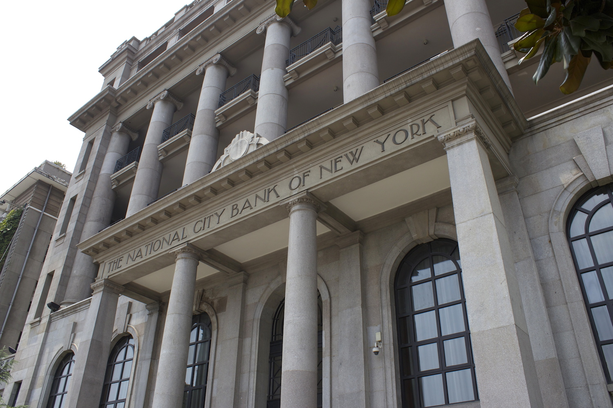

I'm Yixin, Wuhan is my birthplace and hometown.
Wuhan is the capital of Hubei province and the largest city in Central China. It lies in the middle reaches of the Yangtze River's intersection with its largest tributary, Han river. The city of Wuhan was formed by merging the three cities divided by rivers: Wuchang, Hankow, and Hanyang together.
Foreign Concession Era
During the Second Opium War (known in the West as the Arrow War, 1856–1860), the government of the Qing dynasty was defeated by the western powers and signed the Treaties of Tianjin and the Convention of Peking, which stipulated eleven cities or regions as trading ports. On the basis of the Convention of Peking, it brought an area of 30.53 square kilometers along the Yangtze River to become a British Concession and permitted Britain to set up its consulate in the concession. Thus, Hankou became an open trading port. In the years after the Sino-Japanese War, four more were added (French, Japanese, Russian, German). Nowadays, you can see a lot of Exotic style buildings in Wuhan.
Hankow Citibank Building, built in 1922
Wuchang Uprising
On October 10, 1911. The Wuchang Uprising was an armed rebellion that directly led to the downfall of the Qing dynasty and China's five millennia of imperial rule. In my point of view, The only event that the city of Wuhan changed China completely is Wuchang Uprising. The uprising was the beginning of the Xinhai Revolution that successfully overthrew China's last imperial dynasty and the establishment of the Republic of China (ROC), which is the government of Taiwan region nowadays.